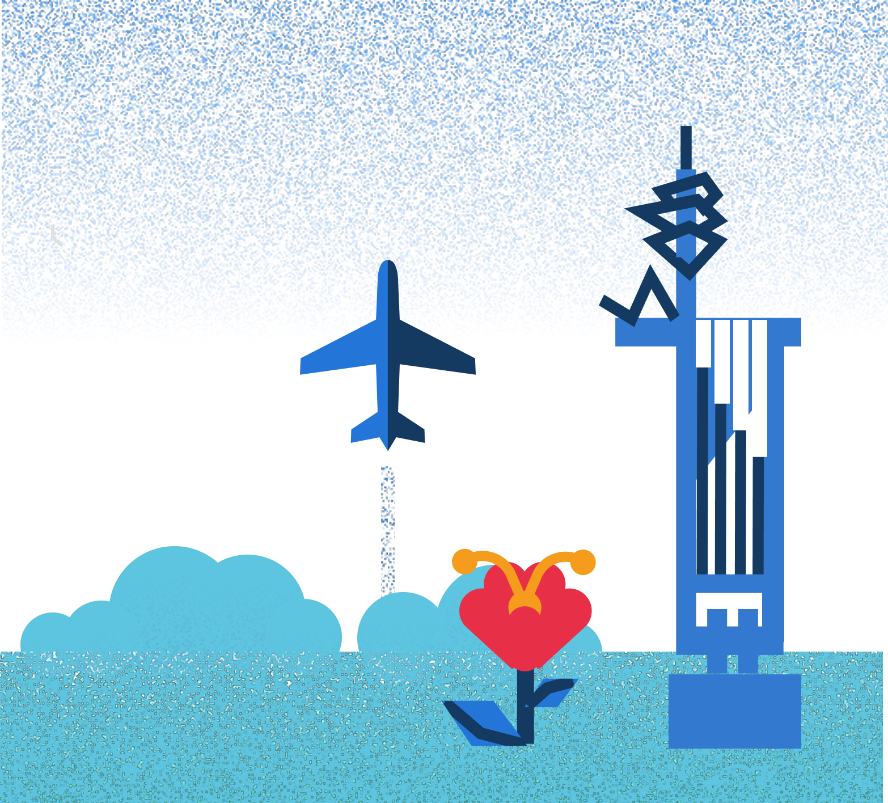
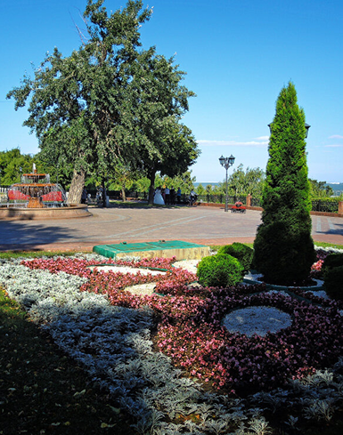
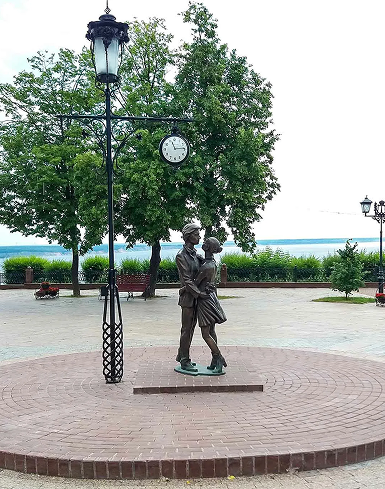
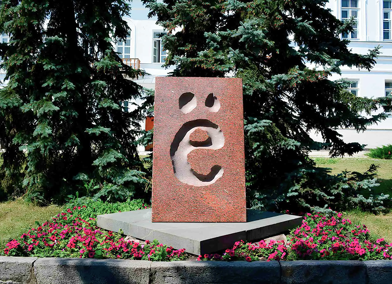
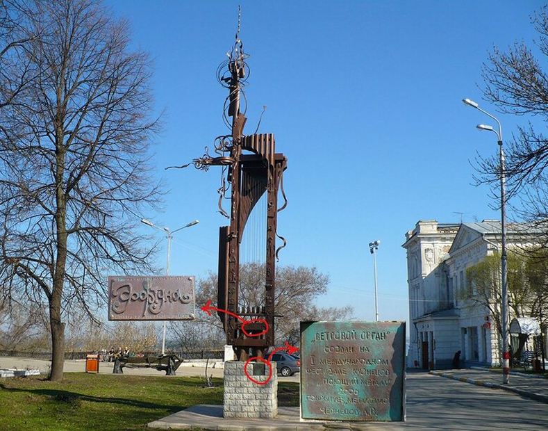
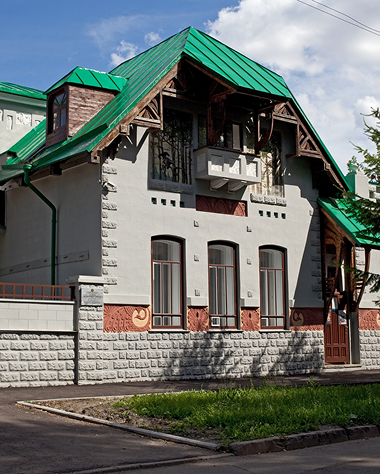
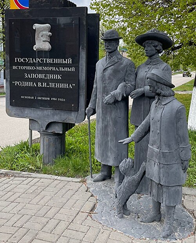
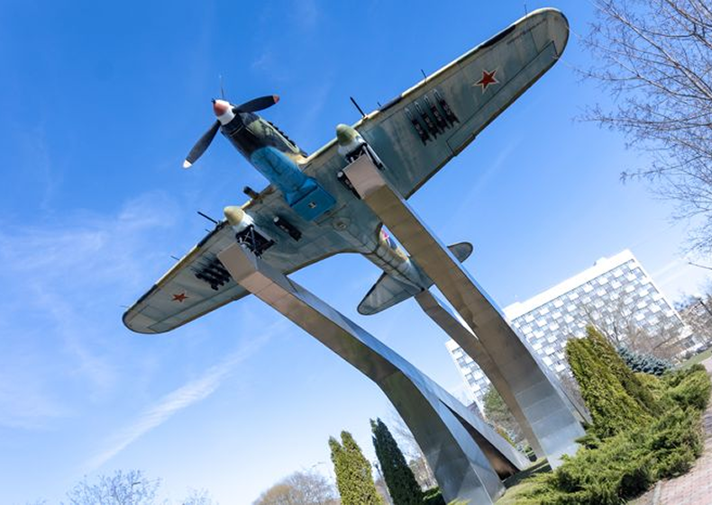
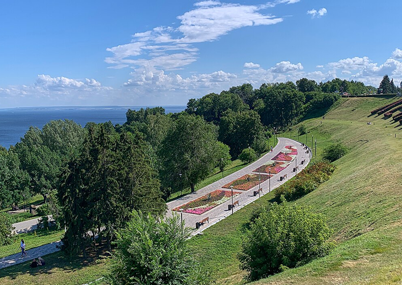

Город семи ветров
Историко-культурный маршрут по центру Ульяновска
Площадь Ленина
Набережная Волги
Этот маршрут — про Ульяновск, где ветер с Волги дует со всех сторон, и это не случайность. «Город семи ветров» — так горожане с любовью называют своё место. Вы пройдёте вдоль смотрового бульвара «Новый Венец», побываете у уникального ветрового органа, встретите самолёт посреди города и отдохнёте в парке с видом на реку. Идеально для тех, кто любит ветер, историю и неожиданные детали ульяновского города.

1. Бульвар «Новый Венец»
Адрес: ул. Александровская, 1–3. Часы работы: круглосуточно


Первая остановка маршрута — легендарный бульвар «Новый Венец», созданный в 1870 году. Вдоль него дует ветер свежий и прохладный с Волги. Здесь приходят горожане любоваться закатами, слушать уличных музыкантов и ощущать неповторимый дух города — там, где возвышенность над рекой превращает обычную прогулку в атмосферное путешествие.
С бульвара открывается один из лучших видов на Волгу в Ульяновске. В разные сезоны пейзаж кардинально меняется: летом здесь море зелени, зимой — захватывающая ледяная панорама.
Для всех Бесплатно2. Памятник букве «Ё» и набережная Волги
Адрес: ул. Пушкинская, 1 (у сквера возле Дома Офицеров). Часы работы: круглосуточно
Второй остановкой — уникальный Памятник букве «Ё», установленный в 2005 году рядом с Домом Офицеров. История буквы неотделима от Симбирска: именно здесь в XVIII веке известный языковед и поэт Николай Карамзин популяризировал её употребление в письменной речи и литературе.
Симбирский ветер как будто создавался для того, чтобы шуметь рядом с этим камнем. Стоит остановиться здесь, почувствовать порывы ветра, которые приносит Волга, и сделать памятное фото с единственным в стране монументом в честь буквы.
Для всех Бесплатно
3. Ветровой орган у моста
Адрес: Набережная реки Волги, у Ульяновского городского моста. Часы работы: круглосуточно

Третий и самый музыкальный объект маршрута — ветровой орган, символ «города семи ветров». Это с 2016 года уникальная арт-инсталляция: орган синтезирует мелодии ветра от каждого из мостов, аккумулируя звуки города до 3000, а ты стоишь, завороженный им, ощущая все семь ветров Ульяновска, которые несут к тебе истории. Подойди поближе и послушай — каждая мелодия неповторима.
Арт-объект создан и вдохновлён многоликой природой ульяновского ветра — в разное время дня орган звучит по-разному.
Для всех Бесплатно4. Музей-заповедник «Родина В.И. Ленина»
Адрес: ул. Ленина, 68. Часы работы: 10:00–18:00 (выходной — понедельник)
Пятая историческая точка — грандиозный Музей-заповедник «Родина В.И. Ленина», где с XIX века дует ветер истории из старинных усадеб, мемориала и ландшафтного парка. Гуляешь по дому-музеям с аутентичными интерьерами, поднимаешься на холм к мемориалу с панорамой, вдыхаешь атмосферу прошлого Ульяновска — всё шепчет на ухо через ветер: от быта до великих событий. Это сердце города, где история оживает в каждом порыве.


5. Памятник самолёту Ил-2
Адрес: пл. 30-летия Победы, ул. 12 Сентября, 80. Часы работы: круглосуточно

Пятая остановка — легендарный боевой самолёт Ил-2, установленный в 1985 году на постаменте у площади 30-летия Победы. Именно в Ульяновске в годы войны производились детали для этого штурмовика, получившего в народе прозвища «Летающий танк» и «Горбатый». Это дань уважения рабочим авиазаводов и всем, кто ковал победу в тылу.
Монумент окружён сквером с клумбами и скамейками — уютное место, чтобы остановиться, передохнуть и задуматься об ульяновских авиационных традициях, которые живы до сегодняшнего дня.
Для всех Бесплатно6. Парк «Дружбы народов»
Адрес: ул. Фруктовая, 3а. Часы работы: 10:00–21:00 (без выходных)
Финальная точка маршрута — Парк «Дружбы народов», где 1970-е годы оставили свои следы в монументальных скульптурах и аллеях. Прогулка по нему — это и дыхание свежего ульяновского воздуха, и разговор о разных культурах, здесь представленных: ялту обходя в кружеве, широкими дорожками, уличными лавочками, так «ветер» дружит «народу» и «саду».
С террас парка открывается вид на Волгу — лучшее место, чтобы завершить прогулку и проститься с «городом семи ветров» до следующего визита.
Для всех Бесплатно